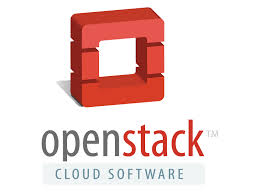
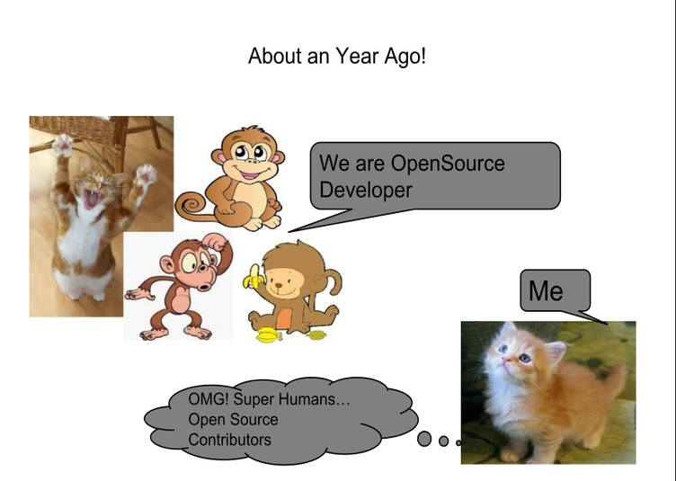

Your browser doesn't support the features required by impress.js, so you are presented with a simplified version of this presentation.
For the best experience please use the latest Chrome, Safari or Firefox browser.
Outreachy with OpenStack Zaqar

Who am I?
- Shaifali Agrawal
- Pursuing Masters in Computer Application
- Outreachy round 9(Dec'14 to March 15) Intern with OpenStack Foundation
- 2015 Google Summer of Code Intern, Full Stack Django Developer

Google Summer of Code
- Aimed to encourage more students into Open Source world
- Focused on Coding
- Only development tasks!
- Can apply as many times as you want while you are a student
Outreachy
- Aimed to encourage more women to get involved with Computer Science, tech and the Open Source world
- Run by GNOME Foundation
- Previously known as Outreach Program for Women(OPW)
Eligibility for Outreachy
- Most of the projects are only for Women
- Have not been a previous GSoC or Outreachy (OPW) intern
- No age limit, no need to be student
- Projects involve coding, design, documentation, marketing
- Happens twice a year!
How it Works?
- Select a project and an organization
- Talk to the mentor and other developers of that project(IRC #openstack-opw for OpenStack)
- Install and play with the software that you are going to hack
How it Works?
- Make an initial contribution
- Pick a bug (tag low_hanging_fruits for OpenStack)
- Get familiar with:
- Contributing Process
- Code Review Process
- Code Base
- Hacking Rules
Application Process
- Discuss more with the assigned mentor about the project
- Write an application, get it reviewed
- Submit it!
Need More Mentors
If you want to help someone to start with Open Source development through OpenStack, connect with OpenStack Outreachy coordinators/ administrators (vkmc, loquacities).
You Achieve
- Get comfortable with Open Source development
- Get involved with the community
- Mentoring
- 5500 USD
- Travel Grant to attend OpenStack summit
- Job offers!
My Project
- Based on Zaqar
- To split the data and control planes of storage layer of Zaqar completely
- Mentor - flaper87
- Its fun working with Zaqar Devs!
What is Zaqar?
Multi-tenant Messaging and Notification service for OpenStack
Why Zaqar?
- The API
- HTTP based
- Firewall friendly
- Authenticate with Keystone
- Multiple messaging patterns
- Easy to Scale
- Fully configurable
My Task
- Zaqar is build with 2 layers - Transport and Storage
- Storage layer consist of two planes - data and control
- I have split the two planes such that now uses can use different datastore for both the planes
- Blueprint Link
Contact Details
- exploreshaifali on IRC, github, twitter
- agrawalshaifali09@gmail.com
- Slides are available at -
Questions?
Thank You!